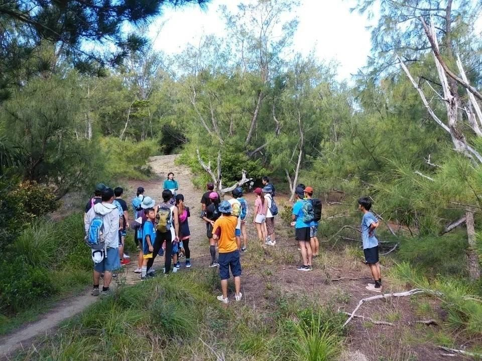
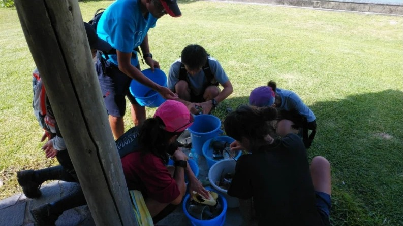
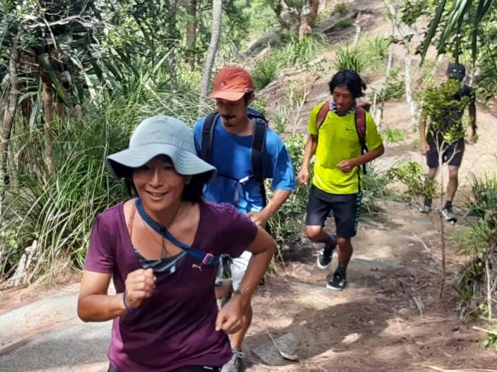
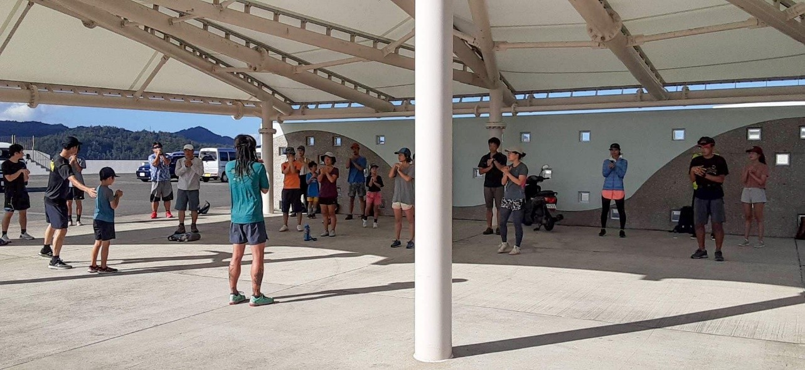
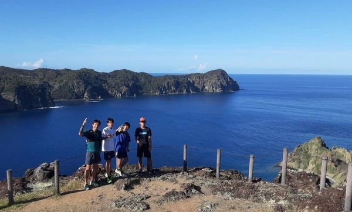

トレイルランニングイベント
TRAIL RUNNINGトレイルランニングは、自然の中のトレイル（未舗装路）を走り地形や景色を楽しむスポーツです。運動能力の向上だけでなく、メンタル面での効果や脳の活性化にもつながると言われています。
現在父島において、地元トレイルランニング団体と連携し、体験会や講習会などのイベントを開催しています。老若男女問わず、まずは楽しんで参加できるプログラムでトレイルランニングの魅力、自然の魅力を多くの人に感じてもらえるよう取り組んでいます。

クリーンナップ活動
CLEAN UPトレイルランニングで利用した山域や街の環境保全のため、走った人の手でごみの回収を実施しています。一見綺麗に見える場所でも、道端をよく見てみると日常における小物類（お菓子のごみ・マスク・たばこ等）が多く見つかります。
気付かぬうちに落としてしまったものでも自然界ではごみとなってしまうため、日々の意識の積み重ねが大切です。

活動の記録
RECORD2022年6月、ネイチャースポーツ部門として最初の活動を行いました。トレイルランニングイベントを2回、トレイル整備（清掃活動）を1回、合計3回実施しています。トレイルランニングイベントでは約6〜8kmを走り、道中で山道や坂道の走り方をレクチャー。ランニング後には1時間ほど、質疑応答や実際に使っている道具の紹介、大会の話などを行いました。
-
2022.06.19
トレイルランニング講習会（第1弾）
国内外で活躍するトレイルランナー・南圭介さんを講師に、青灯から長崎展望台までのコースを走りました。参加者の大半はランニング未経験で、最年少は5歳。朝の時点では9割の方が初心者コースの予定でしたが、途中の分岐で大半の方が上級者コースを選択。汗が滝のように出る炎天下でも、笑顔で山を楽しむ姿が見られました。
形から入らなくても良い。専門の道具も必要ない。5歳でも何歳でも始められる。このスタイルで、山の魅力、走る魅力を島のみなさんと感じていきたいと考えています。


-
2022.06.25
トレイルランニング体験・講習会（中学生）
父島の中学生と、青灯から釣浜入口を経て長崎展望台まで走りました。お喋りを交えながらも走りについてくる島っ子のポテンシャルの高さに驚かされる一日に。長崎展望台へのキツい登り300mでは競走になり、皆でラストスパート。楽しそうに走っていました。

-
2022.06.26
トレイル整備・クリーンナップ
第1弾・第2弾のイベントで利用したコースや遊歩道周辺で、ごみの回収を行いました。世界自然遺産の島だけあって一見ごみは少なそうでしたが、道端をよく見てみるとあちこちに。1時間ほどでバケツ数個分になりました。回収にご協力いただいた皆様、ありがとうございました。